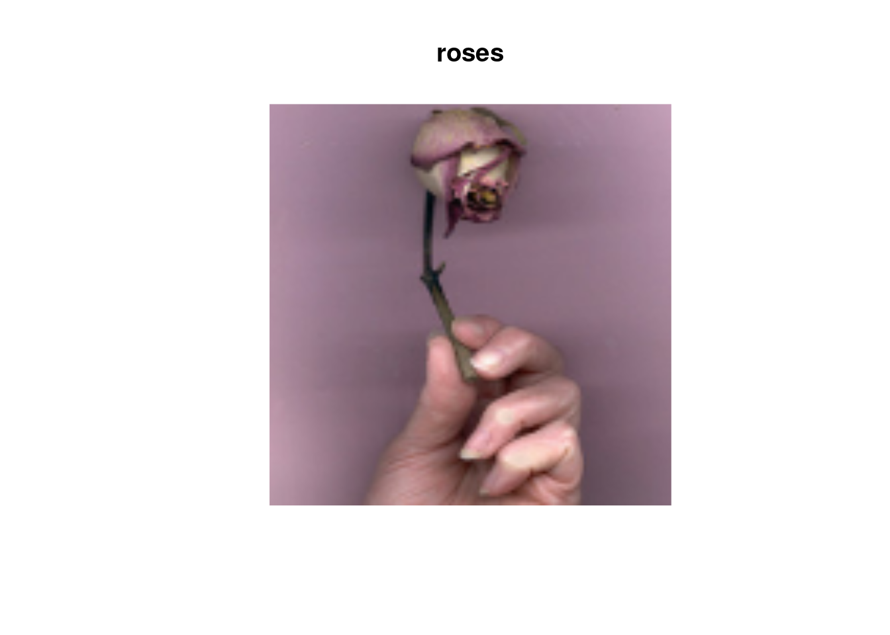
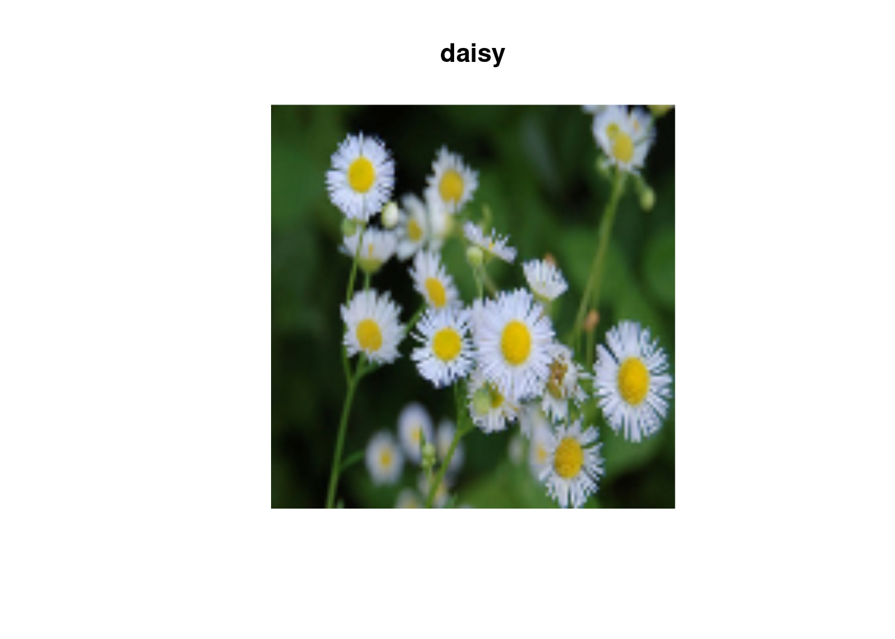

library(tensorflow)
library(tfdatasets)
library(keras)Build TensorFlow input pipelines
The tfdatasets API enables you to build complex input pipelines from simple, reusable pieces. For example, the pipeline for an image model might aggregate data from files in a distributed file system, apply random perturbations to each image, and merge randomly selected images into a batch for training. The pipeline for a text model might involve extracting symbols from raw text data, converting them to embedding identifiers with a lookup table, and batching together sequences of different lengths. The tf$data API makes it possible to handle large amounts of data, read from different data formats, and perform complex transformations.
The tfdatasets API introduces a TensorFlow Dataset abstraction that represents a sequence of elements, in which each element consists of one or more components. For example, in an image pipeline, an element might be a single training example, with a pair of tensor components representing the image and its label.
There are two distinct ways to create a dataset:
- A data source constructs a
Datasetfrom data stored in memory or in one or more files. - A data transformation constructs a dataset from one or more
Datasetobjects.
Basic mechanics
To create an input pipeline, you must start with a data source. For example, to construct a Dataset from data in memory, you can use tensors_dataset() or tensor_slices_dataset(). Alternatively, if your input data is stored in a file in the recommended TFRecord format, you can use tfrecord_dataset().
Once you have a Dataset object, you can transform it into a new Dataset by chaining method calls on the Dataset object. For example, you can apply per-element transformations such as dataset_map(), and multi-element transformations such as dataset_batch(). See the documentation for tfdatasets for a complete list of transformations.
The Dataset object is a iterable. This makes it possible to consume its elements using a the coro::loop:
dataset <- tensor_slices_dataset(c(8, 3, 0, 8, 2, 1))Loaded Tensorflow version 2.9.1dataset<TensorSliceDataset element_spec=TensorSpec(shape=(), dtype=tf.float32, name=None)>coro::loop(for(elem in dataset) {
print(as.numeric(elem))
})[1] 8
[1] 3
[1] 0
[1] 8
[1] 2
[1] 1Or by explicitly creating a Python iterator using iter and consuming its elements using next:
it <- reticulate::as_iterator(dataset)
print(reticulate::iter_next(it))tf.Tensor(8.0, shape=(), dtype=float32)Alternatively, dataset elements can be consumed using the reduce transformation, which reduces all elements to produce a single result. The following example illustrates how to use the reduce transformation to compute the sum of a dataset of integers.
dataset %>%
dataset_reduce(0, function(state, value) state + value)tf.Tensor(22.0, shape=(), dtype=float32)Dataset structure
A dataset produces a sequence of elements, where each element is the same (nested) structure of components. Individual components of the structure can be of any type representable by tf$TypeSpec, including tf$Tensor, tf$sparse$SparseTensor, tf$RaggedTensor, tf$TensorArray, or tf$data$Dataset.
The constructs that can be used to express the (nested) structure of elements include tuple, dict, NamedTuple, and OrderedDict. In particular, list is not a valid construct for expressing the structure of dataset elements. This is because early tfdataset users felt strongly about list inputs (e.g. passed to tensors_dataset()) being automatically packed as tensors and list outputs (e.g. return values of user-defined functions) being coerced into a tuple. As a consequence, if you would like a list input to be treated as a structure, you need to convert it into tuple and if you would like a list output to be a single component, then you need to explicitly pack it using tf$stack.
The dataset_element_spec property allows you to inspect the type of each element component. The property returns a nested structure of tf$TypeSpec objects, matching the structure of the element, which may be a single component, a tuple of components, or a nested tuple of components. For example:
dataset1 <- tensor_slices_dataset(tf$random$uniform(shape(4, 10)))
dataset1$element_specTensorSpec(shape=(10,), dtype=tf.float32, name=None)dataset2 <- tensor_slices_dataset(reticulate::tuple(
tf$random$uniform(shape(4)),
tf$random$uniform(shape(4, 100), maxval = 100L, dtype = tf$int32)
))
dataset2$element_spec[[1]]
TensorSpec(shape=(), dtype=tf.float32, name=None)
[[2]]
TensorSpec(shape=(100,), dtype=tf.int32, name=None)dataset3 <- zip_datasets(dataset1, dataset2)
dataset3$element_spec[[1]]
TensorSpec(shape=(10,), dtype=tf.float32, name=None)
[[2]]
[[2]][[1]]
TensorSpec(shape=(), dtype=tf.float32, name=None)
[[2]][[2]]
TensorSpec(shape=(100,), dtype=tf.int32, name=None)# Dataset containing a sparse tensor.
sparse <- tf$SparseTensor(
indices = list(c(0L,0L), c(1L,2L)),
values = c(1,2),
dense_shape = shape(3,4)
)
dataset4 <- tensors_dataset(sparse)
dataset4$element_specSparseTensorSpec(TensorShape([3, 4]), tf.float32)# Use value_type to see the type of value represented by the element spec
dataset4$element_spec$value_type<class 'tensorflow.python.framework.sparse_tensor.SparseTensor'>The Dataset transformations support datasets of any structure. When using the dataset_map(), and dataset_filter() transformations, which apply a function to each element, the element structure determines the arguments of the function:
dataset1 <- tensor_slices_dataset(
tf$random$uniform(shape(4, 10), minval = 1L, maxval = 10L, dtype = tf$int32))
dataset1<TensorSliceDataset element_spec=TensorSpec(shape=(10,), dtype=tf.int32, name=None)>dataset1 %>%
reticulate::as_iterator() %>%
reticulate::iter_next()tf.Tensor([2 5 5 1 1 8 5 6 2 5], shape=(10), dtype=int32)dataset2 <- tensor_slices_dataset(reticulate::tuple(
tf$random$uniform(shape(4)),
tf$random$uniform(shape(4, 100), maxval = 100L, dtype = tf$int32)
))
dataset2<TensorSliceDataset element_spec=(TensorSpec(shape=(), dtype=tf.float32, name=None), TensorSpec(shape=(100,), dtype=tf.int32, name=None))>dataset3 <- zip_datasets(dataset1, dataset2)
dataset3<ZipDataset element_spec=(TensorSpec(shape=(10,), dtype=tf.int32, name=None), (TensorSpec(shape=(), dtype=tf.float32, name=None), TensorSpec(shape=(100,), dtype=tf.int32, name=None)))>dataset3 %>%
reticulate::as_iterator() %>%
reticulate::iter_next() %>%
str()List of 2
$ :<tf.Tensor: shape=(10), dtype=int32, numpy=array([2, 5, 5, 1, 1, 8, 5, 6, 2, 5], dtype=int32)>
$ :List of 2
..$ :<tf.Tensor: shape=(), dtype=float32, numpy=0.5500927>
..$ :<tf.Tensor: shape=(100), dtype=int32, numpy=…>Reading input data
Consuming R arrays
See Loading NumPy arrays for more examples.
If all of your input data fits in memory, the simplest way to create a Dataset from them is to convert them to tf$Tensor objects and use tensor_slices_dataset().
c(train, test) %<-% dataset_fashion_mnist()train[[1]][] <- train[[1]]/255
dataset <- tensor_slices_dataset(train)
dataset<TensorSliceDataset element_spec={'x': TensorSpec(shape=(28, 28), dtype=tf.float64, name=None), 'y': TensorSpec(shape=(), dtype=tf.int32, name=None)}>Note: The above code snippet will embed the features and labels arrays in your TensorFlow graph as tf$constant() operations. This works well for a small dataset, but wastes memory—because the contents of the array will be copied multiple times—and can run into the 2GB limit for the tf$GraphDef protocol buffer.
Consuming TFRecord data
See Loading TFRecords for an end-to-end example.
The tfdatasets API supports a variety of file formats so that you can process large datasets that do not fit in memory. For example, the TFRecord file format is a simple record-oriented binary format that many TensorFlow applications use for training data. The tfrecord_dataset() class enables you to stream over the contents of one or more TFRecord files as part of an input pipeline.
Here is an example using the test file from the French Street Name Signs (FSNS).
# Creates a dataset that reads all of the examples from two files.
fsns_test_file <- get_file(
"fsns.tfrec",
"https://storage.googleapis.com/download.tensorflow.org/data/fsns-20160927/testdata/fsns-00000-of-00001"
)The filenames argument to the tfrecord_dataset() initializer can either be a string, a list of strings, or a tf$Tensor of strings. Therefore if you have two sets of files for training and validation purposes, you can create a factory method that produces the dataset, taking filenames as an input argument:
dataset <- tfrecord_dataset(filenames = list(fsns_test_file))
dataset<TFRecordDatasetV2 element_spec=TensorSpec(shape=(), dtype=tf.string, name=None)>Many TensorFlow projects use serialized tf$train$Example records in their TFRecord files. These need to be decoded before they can be inspected:
raw_example <- dataset %>%
reticulate::as_iterator() %>%
reticulate::iter_next()
parsed <- tf$train$Example$FromString(raw_example$numpy())
parsed$features$feature['image/text']bytes_list {
value: "Rue Perreyon"
}Consuming text data
See Loading Text for an end to end example.
Many datasets are distributed as one or more text files. The text_line_dataset() provides an easy way to extract lines from one or more text files. Given one or more filenames, a text_line_dataset() will produce one string-valued element per line of those files.
directory_url <- 'https://storage.googleapis.com/download.tensorflow.org/data/illiad/'
file_names <- c('cowper.txt', 'derby.txt', 'butler.txt')
file_paths <- lapply(file_names, function(file_name) {
get_file(file_name, paste0(directory_url, file_name))
})dataset <- text_line_dataset(file_paths)Here are the first few lines of the first file:
dataset %>%
dataset_take(5) %>%
coro::collect(5) %>%
str()List of 5
$ :<tf.Tensor: shape=(), dtype=string, numpy=b"\xef\xbb\xbfAchilles sing, O Goddess! Peleus' son;">
$ :<tf.Tensor: shape=(), dtype=string, numpy=b'His wrath pernicious, who ten thousand woes'>
$ :<tf.Tensor: shape=(), dtype=string, numpy=b"Caused to Achaia's host, sent many a soul">
$ :<tf.Tensor: shape=(), dtype=string, numpy=b'Illustrious into Ades premature,'>
$ :<tf.Tensor: shape=(), dtype=string, numpy=b'And Heroes gave (so stood the will of Jove)'>To alternate lines between files use dataset_interleave(). This makes it easier to shuffle files together. Here are the first, second and third lines from each translation:
files_ds <- tensor_slices_dataset(unlist(file_paths))
lines_ds <- files_ds %>%
dataset_interleave(text_line_dataset, cycle_length = 3)
lines_ds %>%
coro::collect(9) %>%
str()List of 9
$ :<tf.Tensor: shape=(), dtype=string, numpy=b"\xef\xbb\xbfAchilles sing, O Goddess! Peleus' son;">
$ :<tf.Tensor: shape=(), dtype=string, numpy=b"\xef\xbb\xbfOf Peleus' son, Achilles, sing, O Muse,">
$ :<tf.Tensor: shape=(), dtype=string, numpy=b'\xef\xbb\xbfSing, O goddess, the anger of Achilles son of Peleus, that brought'>
$ :<tf.Tensor: shape=(), dtype=string, numpy=b'His wrath pernicious, who ten thousand woes'>
$ :<tf.Tensor: shape=(), dtype=string, numpy=b'The vengeance, deep and deadly; whence to Greece'>
$ :<tf.Tensor: shape=(), dtype=string, numpy=b'countless ills upon the Achaeans. Many a brave soul did it send'>
$ :<tf.Tensor: shape=(), dtype=string, numpy=b"Caused to Achaia's host, sent many a soul">
$ :<tf.Tensor: shape=(), dtype=string, numpy=b'Unnumbered ills arose; which many a soul'>
[list output truncated]By default, a text_line_dataset() yields every line of each file, which may not be desirable, for example, if the file starts with a header line, or contains comments. These lines can be removed using the dataset_skip() or dataset_filter() transformations. Here, you skip the first line, then filter to find only survivors.
titanic_file <- get_file(
"train.csv",
"https://storage.googleapis.com/tf-datasets/titanic/train.csv"
)
titanic_lines <- text_line_dataset(titanic_file)titanic_lines %>%
coro::collect(10) %>%
str()List of 10
$ :<tf.Tensor: shape=(), dtype=string, numpy=b'survived,sex,age,n_siblings_spouses,parch,fare,class,deck,embark_town,alone'>
$ :<tf.Tensor: shape=(), dtype=string, numpy=b'0,male,22.0,1,0,7.25,Third,unknown,Southampton,n'>
$ :<tf.Tensor: shape=(), dtype=string, numpy=b'1,female,38.0,1,0,71.2833,First,C,Cherbourg,n'>
$ :<tf.Tensor: shape=(), dtype=string, numpy=b'1,female,26.0,0,0,7.925,Third,unknown,Southampton,y'>
$ :<tf.Tensor: shape=(), dtype=string, numpy=b'1,female,35.0,1,0,53.1,First,C,Southampton,n'>
$ :<tf.Tensor: shape=(), dtype=string, numpy=b'0,male,28.0,0,0,8.4583,Third,unknown,Queenstown,y'>
$ :<tf.Tensor: shape=(), dtype=string, numpy=b'0,male,2.0,3,1,21.075,Third,unknown,Southampton,n'>
$ :<tf.Tensor: shape=(), dtype=string, numpy=b'1,female,27.0,0,2,11.1333,Third,unknown,Southampton,n'>
[list output truncated]survived <- function(line) {
tf$not_equal(tf$strings$substr(line, 0L, 1L), "0")
}
survivors <- titanic_lines %>%
dataset_skip(1) %>%
dataset_filter(survived)survivors %>%
coro::collect(10) %>%
str()List of 10
$ :<tf.Tensor: shape=(), dtype=string, numpy=b'1,female,38.0,1,0,71.2833,First,C,Cherbourg,n'>
$ :<tf.Tensor: shape=(), dtype=string, numpy=b'1,female,26.0,0,0,7.925,Third,unknown,Southampton,y'>
$ :<tf.Tensor: shape=(), dtype=string, numpy=b'1,female,35.0,1,0,53.1,First,C,Southampton,n'>
$ :<tf.Tensor: shape=(), dtype=string, numpy=b'1,female,27.0,0,2,11.1333,Third,unknown,Southampton,n'>
$ :<tf.Tensor: shape=(), dtype=string, numpy=b'1,female,14.0,1,0,30.0708,Second,unknown,Cherbourg,n'>
$ :<tf.Tensor: shape=(), dtype=string, numpy=b'1,female,4.0,1,1,16.7,Third,G,Southampton,n'>
$ :<tf.Tensor: shape=(), dtype=string, numpy=b'1,male,28.0,0,0,13.0,Second,unknown,Southampton,y'>
$ :<tf.Tensor: shape=(), dtype=string, numpy=b'1,female,28.0,0,0,7.225,Third,unknown,Cherbourg,y'>
[list output truncated]Consuming CSV data
See Loading CSV Files, and Loading Data Frames for more examples.
The CSV file format is a popular format for storing tabular data in plain text.
For example:
titanic_file <- get_file(
"train.csv",
"https://storage.googleapis.com/tf-datasets/titanic/train.csv"
)df <- readr::read_csv(titanic_file)Rows: 627 Columns: 10
── Column specification ────────────────────────────────────────────────────
Delimiter: ","
chr (5): sex, class, deck, embark_town, alone
dbl (5): survived, age, n_siblings_spouses, parch, fare
ℹ Use `spec()` to retrieve the full column specification for this data.
ℹ Specify the column types or set `show_col_types = FALSE` to quiet this message.head(df)# A tibble: 6 × 10
survived sex age n_siblings_spou… parch fare class deck embark_town
<dbl> <chr> <dbl> <dbl> <dbl> <dbl> <chr> <chr> <chr>
1 0 male 22 1 0 7.25 Third unkn… Southampton
2 1 female 38 1 0 71.3 First C Cherbourg
3 1 female 26 0 0 7.92 Third unkn… Southampton
4 1 female 35 1 0 53.1 First C Southampton
5 0 male 28 0 0 8.46 Third unkn… Queenstown
6 0 male 2 3 1 21.1 Third unkn… Southampton
# … with 1 more variable: alone <chr>If your data fits in memory the same tensor_slices_dataset() method works on lists, allowing this data to be easily imported:
titanic_slices <- tensor_slices_dataset(df)
titanic_slices %>%
reticulate::as_iterator() %>%
reticulate::iter_next() %>%
str()List of 10
$ survived :<tf.Tensor: shape=(), dtype=float32, numpy=0.0>
$ sex :<tf.Tensor: shape=(), dtype=string, numpy=b'male'>
$ age :<tf.Tensor: shape=(), dtype=float32, numpy=22.0>
$ n_siblings_spouses:<tf.Tensor: shape=(), dtype=float32, numpy=1.0>
$ parch :<tf.Tensor: shape=(), dtype=float32, numpy=0.0>
$ fare :<tf.Tensor: shape=(), dtype=float32, numpy=7.25>
$ class :<tf.Tensor: shape=(), dtype=string, numpy=b'Third'>
$ deck :<tf.Tensor: shape=(), dtype=string, numpy=b'unknown'>
[list output truncated]A more scalable approach is to load from disk as necessary.
The tfdatasets package provides methods to extract records from one or more CSV files that comply with RFC 4180.
The experimental$make_csv_dataset function is the high level interface for reading sets of csv files. It supports column type inference and many other features, like batching and shuffling, to make usage simple.
titanic_batches <- tf$data$experimental$make_csv_dataset(
titanic_file,
batch_size = 4L,
label_name = "survived"
)titanic_batches %>%
reticulate::as_iterator() %>%
reticulate::iter_next() %>%
str()List of 2
$ :OrderedDict([('sex', <tf.Tensor: shape=(4,), dtype=string, numpy=array([b'male', b'male', b'male', b'male'], dtype=object)>), ('age', <tf.Tensor: shape=(4,), dtype=float32, numpy=array([40., 32., 59., 30.], dtype=float32)>), ('n_siblings_spouses', <tf.Tensor: shape=(4,), dtype=int32, numpy=array([0, 0, 0, 0], dtype=int32)>), ('parch', <tf.Tensor: shape=(4,), dtype=int32, numpy=array([0, 0, 0, 0], dtype=int32)>), ('fare', <tf.Tensor: shape=(4,), dtype=float32, numpy=array([ 0. , 7.8542, 7.25 , 13. ], dtype=float32)>), ('class', <tf.Tensor: shape=(4,), dtype=string, numpy=array([b'First', b'Third', b'Third', b'Second'], dtype=object)>), ('deck', <tf.Tensor: shape=(4,), dtype=string, numpy=array([b'B', b'unknown', b'unknown', b'unknown'], dtype=object)>), ('embark_town', <tf.Tensor: shape=(4,), dtype=string, numpy=
array([b'Southampton', b'Southampton', b'Southampton', b'Southampton'],
dtype=object)>), ('alone', <tf.Tensor: shape=(4,), dtype=string, numpy=array([b'y', b'y', b'y', b'y'], dtype=object)>)])
$ :<tf.Tensor: shape=(4), dtype=int32, numpy=array([0, 1, 0, 0], dtype=int32)>You can use the select_columns argument if you only need a subset of columns.
titanic_batches <- tf$data$experimental$make_csv_dataset(
titanic_file,
batch_size = 4L,
label_name = "survived",
select_columns = c('class', 'fare', 'survived')
)titanic_batches %>%
reticulate::as_iterator() %>%
reticulate::iter_next() %>%
str()List of 2
$ :OrderedDict([('fare', <tf.Tensor: shape=(4,), dtype=float32, numpy=array([ 7.75, 69.55, 15.9 , 8.05], dtype=float32)>), ('class', <tf.Tensor: shape=(4,), dtype=string, numpy=array([b'Third', b'Third', b'Third', b'Third'], dtype=object)>)])
$ :<tf.Tensor: shape=(4), dtype=int32, numpy=array([0, 0, 1, 1], dtype=int32)>There is also a lower-level tf$experimental$CsvDataset class which provides finer grained control. It does not support column type inference. Instead you must specify the type of each column.
titanic_types = list(tf$int32, tf$string, tf$float32, tf$int32, tf$int32, tf$float32, tf$string, tf$string, tf$string, tf$string)
dataset <- tf$data$experimental$CsvDataset(titanic_file, titanic_types , header = TRUE)
dataset %>%
reticulate::as_iterator() %>%
reticulate::iter_next() %>%
str()List of 10
$ :<tf.Tensor: shape=(), dtype=int32, numpy=0>
$ :<tf.Tensor: shape=(), dtype=string, numpy=b'male'>
$ :<tf.Tensor: shape=(), dtype=float32, numpy=22.0>
$ :<tf.Tensor: shape=(), dtype=int32, numpy=1>
$ :<tf.Tensor: shape=(), dtype=int32, numpy=0>
$ :<tf.Tensor: shape=(), dtype=float32, numpy=7.25>
$ :<tf.Tensor: shape=(), dtype=string, numpy=b'Third'>
$ :<tf.Tensor: shape=(), dtype=string, numpy=b'unknown'>
[list output truncated]If some columns are empty, this low-level interface allows you to provide default values instead of column types.
writeLines(con = "missing.csv", text =
"1,2,3,4
,2,3,4
1,,3,4
1,2,,4
1,2,3,
,,,"
)# Creates a dataset that reads all of the records from two CSV files, each with
# four float columns which may have missing values.
record_defaults <- c(999,999,999,999)
dataset <- tf$data$experimental$CsvDataset("missing.csv", record_defaults)
dataset <- dataset %>%
dataset_map(function(...) tf$stack(list(...)))
dataset<MapDataset element_spec=TensorSpec(shape=(4,), dtype=tf.float32, name=None)>dataset %>%
coro::collect() %>%
str()List of 6
$ :<tf.Tensor: shape=(4), dtype=float32, numpy=array([1., 2., 3., 4.], dtype=float32)>
$ :<tf.Tensor: shape=(4), dtype=float32, numpy=array([999., 2., 3., 4.], dtype=float32)>
$ :<tf.Tensor: shape=(4), dtype=float32, numpy=array([ 1., 999., 3., 4.], dtype=float32)>
$ :<tf.Tensor: shape=(4), dtype=float32, numpy=array([ 1., 2., 999., 4.], dtype=float32)>
$ :<tf.Tensor: shape=(4), dtype=float32, numpy=array([ 1., 2., 3., 999.], dtype=float32)>
$ :<tf.Tensor: shape=(4), dtype=float32, numpy=array([999., 999., 999., 999.], dtype=float32)>By default, a CsvDataset yields every column of every line of the file, which may not be desirable, for example if the file starts with a header line that should be ignored, or if some columns are not required in the input. These lines and fields can be removed with the header and select_cols arguments respectively.
# Creates a dataset that reads all of the records from two CSV files with
# headers, extracting float data from columns 2 and 4.
record_defaults <- c(999, 999) # Only provide defaults for the selected columns
dataset <- tf$data$experimental$CsvDataset(
"missing.csv",
record_defaults,
select_cols = c(1L, 3L)
)
dataset <- dataset %>%
dataset_map(function(...) tf$stack(list(...)))
dataset<MapDataset element_spec=TensorSpec(shape=(2,), dtype=tf.float32, name=None)>dataset %>%
coro::collect() %>%
str()List of 6
$ :<tf.Tensor: shape=(2), dtype=float32, numpy=array([2., 4.], dtype=float32)>
$ :<tf.Tensor: shape=(2), dtype=float32, numpy=array([2., 4.], dtype=float32)>
$ :<tf.Tensor: shape=(2), dtype=float32, numpy=array([999., 4.], dtype=float32)>
$ :<tf.Tensor: shape=(2), dtype=float32, numpy=array([2., 4.], dtype=float32)>
$ :<tf.Tensor: shape=(2), dtype=float32, numpy=array([ 2., 999.], dtype=float32)>
$ :<tf.Tensor: shape=(2), dtype=float32, numpy=array([999., 999.], dtype=float32)>Consuming sets of files
There are many datasets distributed as a set of files, where each file is an example.
flowers_root <- get_file(
'flower_photos',
'https://storage.googleapis.com/download.tensorflow.org/example_images/flower_photos.tgz',
untar = TRUE
)Note: these images are licensed CC-BY, see LICENSE.txt for details.
The root directory contains a directory for each class:
fs::dir_ls(flowers_root)/home/tomasz/.keras/datasets/flower_photos/LICENSE.txt
/home/tomasz/.keras/datasets/flower_photos/daisy
/home/tomasz/.keras/datasets/flower_photos/dandelion
/home/tomasz/.keras/datasets/flower_photos/roses
/home/tomasz/.keras/datasets/flower_photos/sunflowers
/home/tomasz/.keras/datasets/flower_photos/tulipsThe files in each class directory are examples:
list_ds <- file_list_dataset(fs::path(flowers_root, "*", "*"))
list_ds %>%
dataset_take(5) %>%
coro::collect() %>%
str()List of 5
$ :<tf.Tensor: shape=(), dtype=string, numpy=b'/home/tomasz/.keras/datasets/flower_photos/roses/488849503_63a290a8c2_m.jpg'>
$ :<tf.Tensor: shape=(), dtype=string, numpy=b'/home/tomasz/.keras/datasets/flower_photos/tulips/16765283686_0315ae00a8.jpg'>
$ :<tf.Tensor: shape=(), dtype=string, numpy=b'/home/tomasz/.keras/datasets/flower_photos/dandelion/17649230811_9bdbbacb8c.jpg'>
$ :<tf.Tensor: shape=(), dtype=string, numpy=b'/home/tomasz/.keras/datasets/flower_photos/dandelion/4572738670_4787a11058_n.jpg'>
$ :<tf.Tensor: shape=(), dtype=string, numpy=b'/home/tomasz/.keras/datasets/flower_photos/tulips/18378581986_5cd1494d08_n.jpg'>Read the data using the tf$io$read_file function and extract the label from the path, returning (image, label) pairs:
process_path <- function(file_path) {
label <- tf$strings$split(file_path, "/")[-2]
list(
tf$io$read_file(file_path),
label
)
}
labeled_ds <- list_ds %>%
dataset_map(process_path)Warning: Negative numbers are interpreted python-style when subsetting tensorflow tensors.
See: ?`[.tensorflow.tensor` for details.
To turn off this warning, set `options(tensorflow.extract.warn_negatives_pythonic = FALSE)`el <- labeled_ds %>%
reticulate::as_iterator() %>%
reticulate::iter_next()
el[[1]]$shapeTensorShape([])el[[2]]tf.Tensor(b'sunflowers', shape=(), dtype=string)Batching dataset elements
Simple batching
The simplest form of batching stacks n consecutive elements of a dataset into a single element. The dataset_batch() transformation does exactly this, with the same constraints as the tf$stack() operator, applied to each component of the elements: ie. for each component i, all elements must have a tensor of the exact same shape.
inc_dataset <- range_dataset(to = 100)
dec_dataset <- range_dataset(0, -100, -1)
dataset <- zip_datasets(inc_dataset, dec_dataset)
batched_dataset <- dataset %>%
dataset_batch(4)
batched_dataset %>%
coro::collect(4) %>%
str()List of 4
$ :List of 2
..$ :<tf.Tensor: shape=(4), dtype=int64, numpy=array([0, 1, 2, 3])>
..$ :<tf.Tensor: shape=(4), dtype=int64, numpy=array([ 0, -1, -2, -3])>
$ :List of 2
..$ :<tf.Tensor: shape=(4), dtype=int64, numpy=array([4, 5, 6, 7])>
..$ :<tf.Tensor: shape=(4), dtype=int64, numpy=array([-4, -5, -6, -7])>
$ :List of 2
..$ :<tf.Tensor: shape=(4), dtype=int64, numpy=array([ 8, 9, 10, 11])>
..$ :<tf.Tensor: shape=(4), dtype=int64, numpy=array([ -8, -9, -10, -11])>
$ :List of 2
..$ :<tf.Tensor: shape=(4), dtype=int64, numpy=array([12, 13, 14, 15])>
..$ :<tf.Tensor: shape=(4), dtype=int64, numpy=array([-12, -13, -14, -15])>While tfdatasets tries to propagate shape information, the default settings of dataset_batch result in an unknown batch size because the last batch may not be full. Note the NULLs in the shape:
batched_dataset<BatchDataset element_spec=(TensorSpec(shape=(None,), dtype=tf.int64, name=None), TensorSpec(shape=(None,), dtype=tf.int64, name=None))>Use the drop_remainder argument to ignore that last batch, and get full shape propagation:
batched_dataset <- dataset %>% dataset_batch(7, drop_remainder = TRUE)
batched_dataset<BatchDataset element_spec=(TensorSpec(shape=(7,), dtype=tf.int64, name=None), TensorSpec(shape=(7,), dtype=tf.int64, name=None))>Batching tensors with padding
The above recipe works for tensors that all have the same size. However, many models (e.g. sequence models) work with input data that can have varying size (e.g. sequences of different lengths). To handle this case, the dataset_padded_batch() transformation enables you to batch tensors of different shape by specifying one or more dimensions in which they may be padded.
dataset <- range_dataset(to = 100)
dataset <- dataset %>%
dataset_map(function(x) tf$fill(list(tf$cast(x, tf$int32)), x)) %>%
dataset_padded_batch(4, padded_shapes = shape(NULL))
dataset %>%
coro::collect(2) %>%
str()List of 2
$ :<tf.Tensor: shape=(4, 3), dtype=int64, numpy=…>
$ :<tf.Tensor: shape=(4, 7), dtype=int64, numpy=…>The dataset_padded_batch() transformation allows you to set different padding for each dimension of each component, and it may be variable-length (signified by NULL in the example above) or constant-length. It is also possible to override the padding value, which defaults to 0.
Training workflows
Processing multiple epochs
The tfdatasets API offers two main ways to process multiple epochs of the same data.
The simplest way to iterate over a dataset in multiple epochs is to use the dataset_repeat() transformation. First, create a dataset of titanic data:
titanic_file <- get_file(
"train.csv",
"https://storage.googleapis.com/tf-datasets/titanic/train.csv"
)
titanic_lines <- text_line_dataset(titanic_file)plot_batch_sizes <- function(ds) {
batch_sizes <- ds %>%
coro::collect() %>%
sapply(function(x) as.numeric(x$shape[1]))
plot(seq_along(batch_sizes), batch_sizes)
}Applying the dataset_repeat() transformation with no arguments will repeat the input indefinitely.
The dataset_repeat() transformation concatenates its arguments without signaling the end of one epoch and the beginning of the next epoch. Because of this a dataset_batch() applied after dataset_repeat() will yield batches that straddle epoch boundaries:
titanic_batches <- titanic_lines %>%
dataset_repeat(3) %>%
dataset_batch(128)
plot_batch_sizes(titanic_batches)
If you need clear epoch separation, put dataset_batch() before the repeat:
titanic_batches <- titanic_lines %>%
dataset_batch(128) %>%
dataset_repeat(3)
plot_batch_sizes(titanic_batches)
If you would like to perform a custom computation (e.g. to collect statistics) at the end of each epoch then it’s simplest to restart the dataset iteration on each epoch:
epochs <- 3
dataset <- titanic_lines %>%
dataset_batch(128)
for(epoch in seq_len(epochs)) {
coro::loop(for(batch in dataset) {
print(batch$shape)
})
cat("End of epoch ", epoch, "\n")
}TensorShape([128])
TensorShape([128])
TensorShape([128])
TensorShape([128])
TensorShape([116])
End of epoch 1
TensorShape([128])
TensorShape([128])
TensorShape([128])
TensorShape([128])
TensorShape([116])
End of epoch 2
TensorShape([128])
TensorShape([128])
TensorShape([128])
TensorShape([128])
TensorShape([116])
End of epoch 3 Randomly shuffling input data
The dataset_shuffle() transformation maintains a fixed-size buffer and chooses the next element uniformly at random from that buffer.
Note: While large buffer_sizes shuffle more thoroughly, they can take a lot of memory, and significant time to fill. Consider using dataset_interleave() across files if this becomes a problem.
Add an index to the dataset so you can see the effect:
lines <- text_line_dataset(titanic_file)
counter <- tf$data$experimental$Counter()
dataset <- zip_datasets(counter, lines)
dataset <- dataset %>%
dataset_shuffle(buffer_size = 100) %>%
dataset_batch(20)
dataset<BatchDataset element_spec=(TensorSpec(shape=(None,), dtype=tf.int64, name=None), TensorSpec(shape=(None,), dtype=tf.string, name=None))>Since the buffer_size is 100, and the batch size is 20, the first batch contains no elements with an index over 120.
line_batch <- coro::collect(dataset, 1)
line_batch[[1]][[1]]tf.Tensor(
[ 48 59 18 26 94 88 60 10 8 98 2 6 82 41 90 39 105 83
71 46], shape=(20), dtype=int64)As with dataset_batch() the order relative to dataset_repeat() matters.
dataset_shuffle() doesn’t signal the end of an epoch until the shuffle buffer is empty. So a shuffle placed before a repeat will show every element of one epoch before moving to the next:
dataset <- zip_datasets(counter, lines)
shuffled <- dataset %>%
dataset_shuffle(buffer_size = 100) %>%
dataset_batch(10) %>%
dataset_repeat(2)
cat("Here are the item ID's near the epoch boundary:\n")Here are the item ID's near the epoch boundary:shuffled %>%
dataset_skip(60) %>%
dataset_take(5) %>%
dataset_collect() %>%
lapply(function(x) x[[1]])[[1]]
tf.Tensor([602 582 600 178 612 488 573 568 611 596], shape=(10), dtype=int64)
[[2]]
tf.Tensor([520 382 620 562 441 606 550 539 575 625], shape=(10), dtype=int64)
[[3]]
tf.Tensor([ 57 403 545 579 610 531 623 614], shape=(8), dtype=int64)
[[4]]
tf.Tensor([55 90 79 16 34 82 44 22 35 89], shape=(10), dtype=int64)
[[5]]
tf.Tensor([ 66 36 102 100 76 70 115 91 30 98], shape=(10), dtype=int64)shuffle_repeat <- shuffled %>%
coro::collect() %>%
sapply(function(x) mean(as.numeric(x[[1]])))
plot(shuffle_repeat)
But a repeat before a shuffle mixes the epoch boundaries together:
dataset <- zip_datasets(counter, lines)
shuffled <- dataset %>%
dataset_repeat(2) %>%
dataset_shuffle(buffer_size = 100) %>%
dataset_batch(10)
cat("Here are the item ID's near the epoch boundary:\n")Here are the item ID's near the epoch boundary:shuffled %>%
dataset_skip(55) %>%
dataset_take(15) %>%
coro::collect() %>%
lapply(function(x) x[[1]]) %>%
str()List of 15
$ :<tf.Tensor: shape=(10), dtype=int64, numpy=array([621, 495, 13, 554, 620, 23, 494, 372, 579, 9])>
$ :<tf.Tensor: shape=(10), dtype=int64, numpy=array([ 31, 556, 538, 329, 623, 6, 35, 599, 622, 379])>
$ :<tf.Tensor: shape=(10), dtype=int64, numpy=array([ 32, 625, 613, 40, 43, 614, 481, 478, 26, 44])>
$ :<tf.Tensor: shape=(10), dtype=int64, numpy=array([596, 459, 518, 27, 590, 584, 47, 514, 557, 578])>
$ :<tf.Tensor: shape=(10), dtype=int64, numpy=array([ 24, 597, 55, 61, 568, 22, 510, 575, 18, 12])>
$ :<tf.Tensor: shape=(10), dtype=int64, numpy=array([581, 612, 41, 386, 25, 36, 526, 14, 73, 619])>
$ :<tf.Tensor: shape=(10), dtype=int64, numpy=array([ 3, 17, 517, 48, 58, 70, 56, 72, 52, 1])>
$ :<tf.Tensor: shape=(10), dtype=int64, numpy=array([506, 74, 53, 37, 87, 49, 86, 78, 15, 33])>
[list output truncated]repeat_shuffle <- shuffled %>%
coro::collect() %>%
sapply(function(x) mean(as.numeric(x[[1]])))
plot(repeat_shuffle)
Preprocessing data
The dataset_map(f) transformation produces a new dataset by applying a given function f to each element of the input dataset. It is based on the map() function that is commonly applied to lists (and other structures) in functional programming languages. The function f takes the tf$Tensor objects that represent a single element in the input, and returns the tf$Tensor objects that will represent a single element in the new dataset. Its implementation uses standard TensorFlow operations to transform one element into another.
This section covers common examples of how to use dataset_map().
Decoding image data and resizing it
When training a neural network on real-world image data, it is often necessary to convert images of different sizes to a common size, so that they may be batched into a fixed size.
Rebuild the flower filenames dataset:
list_ds <- file_list_dataset(file.path(flowers_root, "*", "*"))Write a function that manipulates the dataset elements.
# Reads an image from a file, decodes it into a dense tensor, and resizes it
# to a fixed shape.
parse_image <- function(filename) {
parts <- tf$strings$split(filename, "/")
label <- parts[-2]
image <- tf$io$read_file(filename)
image <- tf$io$decode_jpeg(image)
image <- tf$image$convert_image_dtype(image, tf$float32)
image <- tf$image$resize(image, shape(128, 128))
list(image, label)
}Test that it works.
parsed <- list_ds %>%
reticulate::as_iterator() %>%
reticulate::iter_next() %>%
parse_image()
show <- function(parsed, maxcolor=1) {
plot(as.raster(as.array(parsed[[1]]), max = maxcolor))
title(as.character(parsed[[2]]))
}
show(parsed)
Map it over the dataset.
images_ds <- list_ds %>%
dataset_map(parse_image)
images_ds %>%
dataset_take(2) %>%
coro::collect() %>%
lapply(show)

[[1]]
NULL
[[2]]
NULLParsing tf$Example protocol buffer messages
Many input pipelines extract tf$train$Example protocol buffer messages from a TFRecord format. Each tf$train$Example record contains one or more “features”, and the input pipeline typically converts these features into tensors.
fsns_test_file <- get_file(
"fsns.tfrec",
"https://storage.googleapis.com/download.tensorflow.org/data/fsns-20160927/testdata/fsns-00000-of-00001"
)
dataset <- tfrecord_dataset(filenames = fsns_test_file)
dataset<TFRecordDatasetV2 element_spec=TensorSpec(shape=(), dtype=tf.string, name=None)>You can work with tf$train$Example protos outside of a tf$data$Dataset to understand the data:
raw_example <- dataset %>% reticulate::as_iterator() %>% reticulate::iter_next()
parsed <- tf$train$Example$FromString(raw_example$numpy())
feature <- parsed$features$feature
raw_img <- feature['image/encoded']$bytes_list$value[0]
img <- tf$image$decode_png(raw_img)
img %>%
as.array() %>%
as.raster(max = 255) %>%
plot()
raw_example <- dataset %>% reticulate::as_iterator() %>% reticulate::iter_next()tf_parse <- function(eg) {
example <- tf$io$parse_example(
eg[tf$newaxis],
reticulate::dict(
'image/encoded' = tf$io$FixedLenFeature(shape = shape(), dtype = tf$string),
'image/text' = tf$io$FixedLenFeature(shape = shape(), dtype = tf$string)
)
)
out <- list(example[['image/encoded']][1], example[['image/text']][1])
out[[1]] <- tf$image$decode_png(out[[1]])
out
}example <- tf_parse(raw_example)
print(as.character(example[[2]]))[1] "Rue Perreyon"show(example, maxcolor = 255)
decoded <- dataset %>%
dataset_map(tf_parse)
decoded<MapDataset element_spec=(TensorSpec(shape=(None, None, None), dtype=tf.uint8, name=None), TensorSpec(shape=(), dtype=tf.string, name=None))>decoded %>%
dataset_batch(10) %>%
coro::collect(1) %>%
str()List of 1
$ :List of 2
..$ :<tf.Tensor: shape=(10, 150, 600, 3), dtype=uint8, numpy=…>
..$ :<tf.Tensor: shape=(10), dtype=string, numpy=…>Time series windowing
For an end to end time series example see: Time series forecasting. Time series data is often organized with the time axis intact. Use a simple range_dataset() to demonstrate:
range_ds <- range_dataset(to = 100000)Typically, models based on this sort of data will want a contiguous time slice. The simplest approach would be to batch the data:
Using batch
batches <- range_ds %>%
dataset_batch(10, drop_remainder = TRUE)
batches %>% coro::collect(5) %>% str()List of 5
$ :<tf.Tensor: shape=(10), dtype=int64, numpy=array([0, 1, 2, 3, 4, 5, 6, 7, 8, 9])>
$ :<tf.Tensor: shape=(10), dtype=int64, numpy=array([10, 11, 12, 13, 14, 15, 16, 17, 18, 19])>
$ :<tf.Tensor: shape=(10), dtype=int64, numpy=array([20, 21, 22, 23, 24, 25, 26, 27, 28, 29])>
$ :<tf.Tensor: shape=(10), dtype=int64, numpy=array([30, 31, 32, 33, 34, 35, 36, 37, 38, 39])>
$ :<tf.Tensor: shape=(10), dtype=int64, numpy=array([40, 41, 42, 43, 44, 45, 46, 47, 48, 49])>Or to make dense predictions one step into the future, you might shift the features and labels by one step relative to each other:
dense_1_step <- function(batch) {
# Shift features and labels one step relative to each other.
list(batch[NULL:-1], batch[2:NULL])
}
predict_dense_1_step <- batches %>% dataset_map(dense_1_step)
predict_dense_1_step %>%
coro::collect(3)[[1]]
[[1]][[1]]
tf.Tensor([0 1 2 3 4 5 6 7 8 9], shape=(10), dtype=int64)
[[1]][[2]]
tf.Tensor([1 2 3 4 5 6 7 8 9], shape=(9), dtype=int64)
[[2]]
[[2]][[1]]
tf.Tensor([10 11 12 13 14 15 16 17 18 19], shape=(10), dtype=int64)
[[2]][[2]]
tf.Tensor([11 12 13 14 15 16 17 18 19], shape=(9), dtype=int64)
[[3]]
[[3]][[1]]
tf.Tensor([20 21 22 23 24 25 26 27 28 29], shape=(10), dtype=int64)
[[3]][[2]]
tf.Tensor([21 22 23 24 25 26 27 28 29], shape=(9), dtype=int64)To predict a whole window instead of a fixed offset you can split the batches into two parts:
batches <- range_ds %>%
dataset_batch(15, drop_remainder = TRUE)
label_next_5_steps <- function(batch) {
list(
batch[NULL:-6],# Inputs: All except the last 5 steps
batch[-5:NULL] # Labels: The last 5 steps
)
}
predict_5_steps <- batches %>% dataset_map(label_next_5_steps)
predict_5_steps %>% coro::collect(3)[[1]]
[[1]][[1]]
tf.Tensor([0 1 2 3 4 5 6 7 8 9], shape=(10), dtype=int64)
[[1]][[2]]
tf.Tensor([10 11 12 13 14], shape=(5), dtype=int64)
[[2]]
[[2]][[1]]
tf.Tensor([15 16 17 18 19 20 21 22 23 24], shape=(10), dtype=int64)
[[2]][[2]]
tf.Tensor([25 26 27 28 29], shape=(5), dtype=int64)
[[3]]
[[3]][[1]]
tf.Tensor([30 31 32 33 34 35 36 37 38 39], shape=(10), dtype=int64)
[[3]][[2]]
tf.Tensor([40 41 42 43 44], shape=(5), dtype=int64)To allow some overlap between the features of one batch and the labels of another, use zip_datasets():
feature_length <- 10
label_length <- 3
features <- range_ds %>%
dataset_batch(feature_length, drop_remainder = TRUE)
labels <- range_ds %>%
dataset_batch(feature_length) %>%
dataset_skip(1) %>%
dataset_map(function(labels) labels[NULL:label_length])
predicted_steps <- zip_datasets(features, labels)
coro::collect(predicted_steps, 5)[[1]]
[[1]][[1]]
tf.Tensor([0 1 2 3 4 5 6 7 8 9], shape=(10), dtype=int64)
[[1]][[2]]
tf.Tensor([10 11 12], shape=(3), dtype=int64)
[[2]]
[[2]][[1]]
tf.Tensor([10 11 12 13 14 15 16 17 18 19], shape=(10), dtype=int64)
[[2]][[2]]
tf.Tensor([20 21 22], shape=(3), dtype=int64)
[[3]]
[[3]][[1]]
tf.Tensor([20 21 22 23 24 25 26 27 28 29], shape=(10), dtype=int64)
[[3]][[2]]
tf.Tensor([30 31 32], shape=(3), dtype=int64)
[[4]]
[[4]][[1]]
tf.Tensor([30 31 32 33 34 35 36 37 38 39], shape=(10), dtype=int64)
[[4]][[2]]
tf.Tensor([40 41 42], shape=(3), dtype=int64)
[[5]]
[[5]][[1]]
tf.Tensor([40 41 42 43 44 45 46 47 48 49], shape=(10), dtype=int64)
[[5]][[2]]
tf.Tensor([50 51 52], shape=(3), dtype=int64)Using window
While using dataset_batch works, there are situations where you may need finer control. The dataset_window() method gives you complete control, but requires some care: it returns a Dataset of Datasets. See Dataset structure for details.
window_size <- 5
windows <- range_ds %>%
dataset_window(window_size, shift = 1)
coro::collect(windows, 5)[[1]]
<_VariantDataset element_spec=TensorSpec(shape=(), dtype=tf.int64, name=None)>
[[2]]
<_VariantDataset element_spec=TensorSpec(shape=(), dtype=tf.int64, name=None)>
[[3]]
<_VariantDataset element_spec=TensorSpec(shape=(), dtype=tf.int64, name=None)>
[[4]]
<_VariantDataset element_spec=TensorSpec(shape=(), dtype=tf.int64, name=None)>
[[5]]
<_VariantDataset element_spec=TensorSpec(shape=(), dtype=tf.int64, name=None)>The dataset_flat_map method can take a dataset of datasets and flatten it into a single dataset:
windows %>%
dataset_flat_map(function(x) x) %>%
dataset_take(30) %>%
coro::collect()[[1]]
tf.Tensor(0, shape=(), dtype=int64)
[[2]]
tf.Tensor(1, shape=(), dtype=int64)
[[3]]
tf.Tensor(2, shape=(), dtype=int64)
[[4]]
tf.Tensor(3, shape=(), dtype=int64)
[[5]]
tf.Tensor(4, shape=(), dtype=int64)
[[6]]
tf.Tensor(1, shape=(), dtype=int64)
[[7]]
tf.Tensor(2, shape=(), dtype=int64)
[[8]]
tf.Tensor(3, shape=(), dtype=int64)
[[9]]
tf.Tensor(4, shape=(), dtype=int64)
[[10]]
tf.Tensor(5, shape=(), dtype=int64)
[[11]]
tf.Tensor(2, shape=(), dtype=int64)
[[12]]
tf.Tensor(3, shape=(), dtype=int64)
[[13]]
tf.Tensor(4, shape=(), dtype=int64)
[[14]]
tf.Tensor(5, shape=(), dtype=int64)
[[15]]
tf.Tensor(6, shape=(), dtype=int64)
[[16]]
tf.Tensor(3, shape=(), dtype=int64)
[[17]]
tf.Tensor(4, shape=(), dtype=int64)
[[18]]
tf.Tensor(5, shape=(), dtype=int64)
[[19]]
tf.Tensor(6, shape=(), dtype=int64)
[[20]]
tf.Tensor(7, shape=(), dtype=int64)
[[21]]
tf.Tensor(4, shape=(), dtype=int64)
[[22]]
tf.Tensor(5, shape=(), dtype=int64)
[[23]]
tf.Tensor(6, shape=(), dtype=int64)
[[24]]
tf.Tensor(7, shape=(), dtype=int64)
[[25]]
tf.Tensor(8, shape=(), dtype=int64)
[[26]]
tf.Tensor(5, shape=(), dtype=int64)
[[27]]
tf.Tensor(6, shape=(), dtype=int64)
[[28]]
tf.Tensor(7, shape=(), dtype=int64)
[[29]]
tf.Tensor(8, shape=(), dtype=int64)
[[30]]
tf.Tensor(9, shape=(), dtype=int64)In nearly all cases, you will want to .batch the dataset first:
sub_to_batch <- function(sub) {
sub %>%
dataset_batch(window_size, drop_remainder = TRUE)
}
windows %>%
dataset_flat_map(sub_to_batch) %>%
dataset_take(5) %>%
coro::collect()[[1]]
tf.Tensor([0 1 2 3 4], shape=(5), dtype=int64)
[[2]]
tf.Tensor([1 2 3 4 5], shape=(5), dtype=int64)
[[3]]
tf.Tensor([2 3 4 5 6], shape=(5), dtype=int64)
[[4]]
tf.Tensor([3 4 5 6 7], shape=(5), dtype=int64)
[[5]]
tf.Tensor([4 5 6 7 8], shape=(5), dtype=int64)Now, you can see that the shift argument controls how much each window moves over. Putting this together you might write this function:
make_window_dataset <- function(ds, window_size = 5, shift = 1, stride = 1) {
windows <- ds %>%
dataset_window(window_size, shift = shift, stride = stride)
sub_to_batch <- function(sub) {
sub %>%
dataset_batch(window_size, drop_remainder = TRUE)
}
windows %>%
dataset_flat_map(sub_to_batch)
}ds <- make_window_dataset(range_ds, window_size = 10, shift = 5, stride = 3)
coro::collect(ds, 10) %>%
str()List of 10
$ :<tf.Tensor: shape=(10), dtype=int64, numpy=array([ 0, 3, 6, 9, 12, 15, 18, 21, 24, 27])>
$ :<tf.Tensor: shape=(10), dtype=int64, numpy=array([ 5, 8, 11, 14, 17, 20, 23, 26, 29, 32])>
$ :<tf.Tensor: shape=(10), dtype=int64, numpy=array([10, 13, 16, 19, 22, 25, 28, 31, 34, 37])>
$ :<tf.Tensor: shape=(10), dtype=int64, numpy=array([15, 18, 21, 24, 27, 30, 33, 36, 39, 42])>
$ :<tf.Tensor: shape=(10), dtype=int64, numpy=array([20, 23, 26, 29, 32, 35, 38, 41, 44, 47])>
$ :<tf.Tensor: shape=(10), dtype=int64, numpy=array([25, 28, 31, 34, 37, 40, 43, 46, 49, 52])>
$ :<tf.Tensor: shape=(10), dtype=int64, numpy=array([30, 33, 36, 39, 42, 45, 48, 51, 54, 57])>
$ :<tf.Tensor: shape=(10), dtype=int64, numpy=array([35, 38, 41, 44, 47, 50, 53, 56, 59, 62])>
[list output truncated]Then it’s easy to extract labels, as before:
dense_labels_ds <- ds %>%
dataset_map(dense_1_step)
coro::collect(dense_labels_ds, 1)[[1]]
[[1]][[1]]
tf.Tensor([ 0 3 6 9 12 15 18 21 24 27], shape=(10), dtype=int64)
[[1]][[2]]
tf.Tensor([ 3 6 9 12 15 18 21 24 27], shape=(9), dtype=int64)Resampling
When working with a dataset that is very class-imbalanced, you may want to resample the dataset. tfdatasets provides two methods to do this. The credit card fraud dataset is a good example of this sort of problem.
Note: See Imbalanced Data for a full tutorial.
zip_path <- get_file(
origin = 'https://storage.googleapis.com/download.tensorflow.org/data/creditcard.zip',
fname = 'creditcard.zip',
extract = TRUE
)
csv_path <- gsub("zip", "csv", zip_path)creditcard_ds <- tf$data$experimental$make_csv_dataset(
csv_path,
batch_size = 1024L,
label_name = "Class",
# Set the column types: 30 floats and an int.
column_defaults = c(lapply(seq_len(30), function(x) tf$float32), tf$int64)
)Now, check the distribution of classes, it is highly skewed:
count <- function(counts, batch) {
class_1 <- batch[[2]] == 1
class_1 <- tf$cast(class_1, tf$int32)
class_0 <- batch[[2]] == 0
class_0 <- tf$cast(class_0, tf$int32)
counts[['class_0']] <- counts[['class_0']] + tf$reduce_sum(class_0)
counts[['class_1']] <- counts[['class_1']] + tf$reduce_sum(class_1)
counts
}counts <- creditcard_ds %>%
dataset_take(10) %>%
dataset_reduce(
initial_state = list('class_0' = 0L, 'class_1' = 0L),
reduce_func = count
)
counts$class_0
tf.Tensor(10192, shape=(), dtype=int32)
$class_1
tf.Tensor(48, shape=(), dtype=int32)A common approach to training with an imbalanced dataset is to balance it. tfdatasets includes a few methods which enable this workflow:
Datasets sampling
One approach to resampling a dataset is to use sample_from_datasets. This is more applicable when you have a separate data$Dataset for each class.
Here, just use filter to generate them from the credit card fraud data:
negative_ds <- creditcard_ds %>%
dataset_unbatch() %>%
dataset_filter(function(features, label) label == 0) %>%
dataset_repeat()
positive_ds <- creditcard_ds %>%
dataset_unbatch() %>%
dataset_filter(function(features, label) label == 1) %>%
dataset_repeat()positive_ds %>%
coro::collect(1)[[1]]
[[1]][[1]]
Dict (30 items)
[[1]][[2]]
tf.Tensor(1, shape=(), dtype=int64)To use sample_from_datasets pass the datasets, and the weight for each:
balanced_ds <- list(negative_ds, positive_ds) %>%
sample_from_datasets(c(0.5, 0.5)) %>%
dataset_batch(10)Now the dataset produces examples of each class with 50/50 probability:
balanced_ds %>%
dataset_map(function(x, y) y) %>%
coro::collect(10) %>%
str()List of 10
$ :<tf.Tensor: shape=(10), dtype=int64, numpy=array([1, 0, 0, 1, 1, 0, 1, 0, 0, 0])>
$ :<tf.Tensor: shape=(10), dtype=int64, numpy=array([1, 0, 1, 1, 0, 1, 1, 1, 1, 1])>
$ :<tf.Tensor: shape=(10), dtype=int64, numpy=array([0, 0, 0, 1, 1, 0, 0, 1, 0, 1])>
$ :<tf.Tensor: shape=(10), dtype=int64, numpy=array([1, 0, 1, 1, 0, 1, 0, 1, 1, 0])>
$ :<tf.Tensor: shape=(10), dtype=int64, numpy=array([1, 0, 0, 0, 1, 0, 0, 1, 0, 0])>
$ :<tf.Tensor: shape=(10), dtype=int64, numpy=array([0, 0, 0, 0, 0, 0, 1, 0, 1, 0])>
$ :<tf.Tensor: shape=(10), dtype=int64, numpy=array([0, 0, 1, 1, 0, 0, 1, 1, 1, 1])>
$ :<tf.Tensor: shape=(10), dtype=int64, numpy=array([1, 0, 0, 0, 0, 0, 0, 1, 0, 1])>
[list output truncated]Rejection resampling
One problem with the above sample_from_datasets approach is that it needs a separate TensorFlow Dataset per class. You could use dataset_filter to create those two datasets, but that results in all the data being loaded twice.
The dataset_rejection_resample() method can be applied to a dataset to rebalance it, while only loading it once. Elements will be dropped from the dataset to achieve balance.
dataset_rejection_resample() takes a class_func argument. This class_func is applied to each dataset element, and is used to determine which class an example belongs to for the purposes of balancing.
The goal here is to balance the lable distribution, and the elements of creditcard_ds are already (features, label) pairs. So the class_func just needs to return those labels:
class_func <- function(features, label) {
label
}The resampling method deals with individual examples, so in this case you must unbatch the dataset before applying that method.
The method needs a target distribution, and optionally an initial distribution estimate as inputs.
resample_ds <- creditcard_ds %>%
dataset_unbatch() %>%
dataset_rejection_resample(
class_func,
target_dist = c(0.5,0.5),
initial_dist = prop.table(sapply(counts, as.numeric))
) %>%
dataset_batch(10)The dataset_rejection_resample() method returns (class, example) pairs where the class is the output of the class_func. In this case, the example was already a (feature, label) pair, so use map to drop the extra copy of the labels:
balanced_ds <- resample_ds %>%
dataset_map(function(extra_label, features_and_label) features_and_label)Now the dataset produces examples of each class with 50/50 probability:
balanced_ds %>%
dataset_map(function(feat, label) label) %>%
coro::collect(10) %>%
str()List of 10
$ :<tf.Tensor: shape=(10), dtype=int64, numpy=array([1, 0, 1, 0, 0, 0, 1, 1, 1, 0])>
$ :<tf.Tensor: shape=(10), dtype=int64, numpy=array([0, 1, 0, 0, 1, 0, 0, 1, 0, 1])>
$ :<tf.Tensor: shape=(10), dtype=int64, numpy=array([0, 1, 1, 0, 1, 1, 0, 0, 1, 1])>
$ :<tf.Tensor: shape=(10), dtype=int64, numpy=array([1, 0, 0, 0, 0, 1, 1, 0, 0, 0])>
$ :<tf.Tensor: shape=(10), dtype=int64, numpy=array([0, 1, 1, 0, 1, 0, 0, 1, 1, 1])>
$ :<tf.Tensor: shape=(10), dtype=int64, numpy=array([0, 0, 0, 1, 0, 1, 0, 0, 1, 0])>
$ :<tf.Tensor: shape=(10), dtype=int64, numpy=array([0, 0, 1, 1, 1, 1, 1, 0, 1, 1])>
$ :<tf.Tensor: shape=(10), dtype=int64, numpy=array([1, 1, 0, 1, 0, 0, 0, 0, 0, 0])>
[list output truncated]Iterator Checkpointing
Tensorflow supports taking checkpoints so that when your training process restarts it can restore the latest checkpoint to recover most of its progress. In addition to checkpointing the model variables, you can also checkpoint the progress of the dataset iterator. This could be useful if you have a large dataset and don’t want to start the dataset from the beginning on each restart. Note however that iterator checkpoints may be large, since transformations such as shuffle and prefetch require buffering elements within the iterator.
To include your iterator in a checkpoint, pass the iterator to the tf$train$Checkpoint constructor.
range_ds <- range_dataset(to = 20)
iterator <- reticulate::as_iterator(range_ds)
ckpt <- tf$train$Checkpoint(step = tf$Variable(0), iterator = iterator)
manager <- tf$train$CheckpointManager(ckpt, '/tmp/my_ckpt', max_to_keep = 3)
for (i in 1:5) {
print(reticulate::iter_next(iterator))
}tf.Tensor(0, shape=(), dtype=int64)
tf.Tensor(1, shape=(), dtype=int64)
tf.Tensor(2, shape=(), dtype=int64)
tf.Tensor(3, shape=(), dtype=int64)
tf.Tensor(4, shape=(), dtype=int64)save_path <- manager$save()
for (i in 1:5) {
print(reticulate::iter_next(iterator))
}tf.Tensor(5, shape=(), dtype=int64)
tf.Tensor(6, shape=(), dtype=int64)
tf.Tensor(7, shape=(), dtype=int64)
tf.Tensor(8, shape=(), dtype=int64)
tf.Tensor(9, shape=(), dtype=int64)ckpt$restore(manager$latest_checkpoint)<tensorflow.python.training.tracking.util.CheckpointLoadStatus object at 0x7f0e746bd4f0>for (i in 1:5) {
print(reticulate::iter_next(iterator))
}tf.Tensor(5, shape=(), dtype=int64)
tf.Tensor(6, shape=(), dtype=int64)
tf.Tensor(7, shape=(), dtype=int64)
tf.Tensor(8, shape=(), dtype=int64)
tf.Tensor(9, shape=(), dtype=int64)Note: It is not possible to checkpoint an iterator which relies on external state such as a tf$py_function. Attempting to do so will raise an exception complaining about the external state.
Using tfdatasets with Keras
The Keras API simplifies many aspects of creating and executing machine learning models. Its fit() and evaluate() and predict() APIs support datasets as inputs. Here is a quick dataset and model setup:
c(train, test) %<-% dataset_fashion_mnist()fmnist_train_ds <- train %>%
tensor_slices_dataset() %>%
dataset_map(unname) %>%
dataset_shuffle(5000) %>%
dataset_batch(32)
model <- keras_model_sequential() %>%
layer_rescaling(scale = 1/255) %>%
layer_flatten() %>%
layer_dense(10)
model %>% compile(
optimizer = 'adam',
loss = loss_sparse_categorical_crossentropy(from_logits = TRUE),
metrics = 'accuracy'
)Passing a dataset of (feature, label) pairs is all that’s needed for fit() and evaluate():
model %>% fit(fmnist_train_ds, epochs = 2)If you pass an infinite dataset, for example by calling dataset_repeat(), you just need to also pass the steps_per_epoch argument:
model %>% fit(
fmnist_train_ds %>% dataset_repeat(),
epochs = 2,
steps_per_epoch = 20
)For evaluation you can pass the number of evaluation steps:
model %>% evaluate(fmnist_train_ds) loss accuracy
0.4316357 0.8527667 For long datasets, set the number of steps to evaluate:
model %>% evaluate(
fmnist_train_ds %>% dataset_repeat(),
steps = 10
) loss accuracy
0.3390861 0.8843750 The labels are not required in when calling Model$predict.
predict_ds <- tensor_slices_dataset(train$x) %>%
dataset_batch(32)
result <- predict(model, predict_ds, steps = 10)
dim(result)[1] 320 10But the labels are ignored if you do pass a dataset containing them:
result <- predict(model, fmnist_train_ds, steps = 10)
dim(result)[1] 320 10Environment Details
Tensorflow Version
tensorflow::tf_config()TensorFlow v2.9.1 (~/.virtualenvs/r-tensorflow-site/lib/python3.9/site-packages/tensorflow)
Python v3.9 (~/.virtualenvs/r-tensorflow-site/bin/python)
R Environment Information
sessionInfo()R version 4.2.1 (2022-06-23)
Platform: x86_64-pc-linux-gnu (64-bit)
Running under: Ubuntu 20.04.4 LTS
Matrix products: default
BLAS/LAPACK: /usr/lib/x86_64-linux-gnu/libmkl_rt.so
locale:
[1] LC_CTYPE=en_US.UTF-8 LC_NUMERIC=C
[3] LC_TIME=en_US.UTF-8 LC_COLLATE=en_US.UTF-8
[5] LC_MONETARY=en_US.UTF-8 LC_MESSAGES=en_US.UTF-8
[7] LC_PAPER=en_US.UTF-8 LC_NAME=C
[9] LC_ADDRESS=C LC_TELEPHONE=C
[11] LC_MEASUREMENT=en_US.UTF-8 LC_IDENTIFICATION=C
attached base packages:
[1] stats graphics grDevices utils datasets methods base
other attached packages:
[1] keras_2.9.0.9000 tfdatasets_2.9.0.9000 tensorflow_2.9.0.9000
loaded via a namespace (and not attached):
[1] Rcpp_1.0.9 pillar_1.7.0 compiler_4.2.1
[4] base64enc_0.1-3 tools_4.2.1 bit_4.0.4
[7] zeallot_0.1.0 digest_0.6.29 tibble_3.1.7
[10] lifecycle_1.0.1 jsonlite_1.8.0 evaluate_0.15
[13] lattice_0.20-45 pkgconfig_2.0.3 png_0.1-7
[16] rlang_1.0.4 Matrix_1.4-1 cli_3.3.0
[19] parallel_4.2.1 yaml_2.3.5 xfun_0.31
[22] coro_1.0.2.9000 fastmap_1.1.0 stringr_1.4.0
[25] knitr_1.39 fs_1.5.2 hms_1.1.1
[28] generics_0.1.3 htmlwidgets_1.5.4 vctrs_0.4.1
[31] bit64_4.0.5 rprojroot_2.0.3 grid_4.2.1
[34] tidyselect_1.1.2 reticulate_1.25-9000 glue_1.6.2
[37] here_1.0.1 R6_2.5.1 fansi_1.0.3
[40] vroom_1.5.7 rmarkdown_2.14 tzdb_0.3.0
[43] purrr_0.3.4 readr_2.1.2 magrittr_2.0.3
[46] whisker_0.4 ellipsis_0.3.2 tfruns_1.5.0
[49] htmltools_0.5.2 utf8_1.2.2 stringi_1.7.8
[52] crayon_1.5.1
Python Environment Information
system2(reticulate::py_exe(), c("-m pip freeze"), stdout = TRUE) |> writeLines()absl-py==1.1.0
asttokens==2.0.5
astunparse==1.6.3
backcall==0.2.0
beautifulsoup4==4.11.1
cachetools==5.2.0
certifi==2022.6.15
charset-normalizer==2.1.0
decorator==5.1.1
dill==0.3.5.1
etils==0.6.0
executing==0.8.3
filelock==3.7.1
flatbuffers==1.12
gast==0.4.0
gdown==4.5.1
google-auth==2.9.0
google-auth-oauthlib==0.4.6
google-pasta==0.2.0
googleapis-common-protos==1.56.4
grpcio==1.47.0
h5py==3.7.0
idna==3.3
importlib-metadata==4.12.0
importlib-resources==5.8.0
ipython==8.4.0
jedi==0.18.1
keras==2.9.0
Keras-Preprocessing==1.1.2
keras-tuner==1.1.2
kt-legacy==1.0.4
libclang==14.0.1
Markdown==3.3.7
matplotlib-inline==0.1.3
numpy==1.23.1
oauthlib==3.2.0
opt-einsum==3.3.0
packaging==21.3
pandas==1.4.3
parso==0.8.3
pexpect==4.8.0
pickleshare==0.7.5
Pillow==9.2.0
promise==2.3
prompt-toolkit==3.0.30
protobuf==3.19.4
ptyprocess==0.7.0
pure-eval==0.2.2
pyasn1==0.4.8
pyasn1-modules==0.2.8
pydot==1.4.2
Pygments==2.12.0
pyparsing==3.0.9
PySocks==1.7.1
python-dateutil==2.8.2
pytz==2022.1
PyYAML==6.0
requests==2.28.1
requests-oauthlib==1.3.1
rsa==4.8
scipy==1.8.1
six==1.16.0
soupsieve==2.3.2.post1
stack-data==0.3.0
tensorboard==2.9.1
tensorboard-data-server==0.6.1
tensorboard-plugin-wit==1.8.1
tensorflow==2.9.1
tensorflow-datasets==4.6.0
tensorflow-estimator==2.9.0
tensorflow-hub==0.12.0
tensorflow-io-gcs-filesystem==0.26.0
tensorflow-metadata==1.9.0
termcolor==1.1.0
toml==0.10.2
tqdm==4.64.0
traitlets==5.3.0
typing_extensions==4.3.0
urllib3==1.26.10
wcwidth==0.2.5
Werkzeug==2.1.2
wrapt==1.14.1
zipp==3.8.1
Additional Information
TF Devices:
- PhysicalDevice(name='/physical_device:CPU:0', device_type='CPU')
- PhysicalDevice(name='/physical_device:GPU:0', device_type='GPU')
CPU cores: 12
Date rendered: 2022-07-14
Page render time: 22 seconds